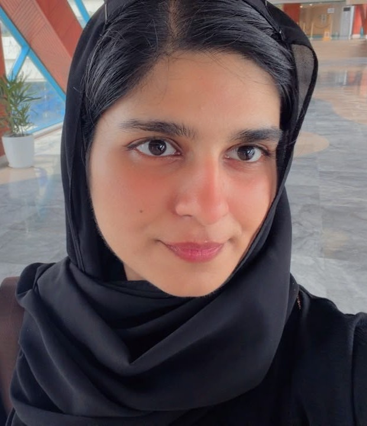

Content writing
Researched articles, blog posts, and briefs designed to answer reader questions and fit a publication’s voice.
CONTENT · RESEARCH · OUTREACH
I help brands and content teams communicate clearly through useful writing, careful publisher research, and thoughtful editorial outreach.
Explore my work ↘ Discuss a project ↗Original portfolio samples · Transparent collaboration · Reader-first content
Words
with
purpose.
01 / WHAT I DO
Researched articles, blog posts, and briefs designed to answer reader questions and fit a publication’s voice.
Relevant publisher discovery, personalized pitches, follow-ups, and organized prospect research—without promising guaranteed placements.
Search-intent research, content outlines, on-page recommendations, and topic ideas that prioritize usefulness.
Publication research and tailored story angles based on audience fit, contributor guidelines, and editorial relevance.
02 / SELECTED SAMPLES
These original samples demonstrate my approach. They are not represented as previously published client work.

03 / ABOUT
I’m Ezzah Chaudary, an emerging content writer and outreach professional interested in how clear writing and relevant connections help ideas reach the right audience.
My approach starts with research: understand the publication, respect its readers, and offer something genuinely useful. I value accurate information, a natural editorial voice, and transparent communication.
04 / HOW I WORK
01Understand the brief
Clarify the audience, goal, subject, and requirements.
02Research and recommend
Build a relevant shortlist or content outline.
03Create and refine
Develop useful content and improve it through feedback.
04Communicate transparently
Respect editorial independence and report outcomes accurately.
05 / START A CONVERSATION
Tell me what you’re working on, who you want to reach, and where you need support.
Email me ↗